Context
Expense tracking without the spreadsheet
Most people who try to track their spending by hand give up within weeks. PayTrack solves this by reading your payment SMS and UPI transactions automatically, so there's nothing to type in. The screens just need to make all that information worth checking every day.
The design had to do two different jobs well: feel calm and simple the first time someone opens the app, and feel quick and clear every time after that, when someone's just checking where their money went.
The challenge
Challenges
Making two colors feel like enough
With no room to hide behind extra color, every screen had to earn attention through layout instead.
Turning 12 screens into a system
Every button and card rule had to be written down early, then hold up across 40+ screens.
A mascot that knows when to leave
It had to feel human during onboarding, then get out of the way once real numbers appeared.
Icons that stay clear at 48px
Ten icons, one shared style, each still needed to read instantly inside a small circle.
My role
Visual identity and UI, screen to screen
This was a style exploration for PayTrack, a UPI-first expense tracker - defining the product's visual language and applying it consistently across more than 40 screens covering sign-up, home, transactions, categories and profile.
Scope covered the full system: color, iconography, notification patterns, and screen-by-screen UI, designed for iOS and Android in Figma, with six written guidelines so new screens stay consistent.
Process
One accent, held with restraint
Most finance apps use blue and white. This one uses just two background colors instead - a deep near-black for anything important, like your statement, and a warm cream for everything you're meant to scan quickly. One bright lime green is used for every button and highlight, so your eye always knows where to look.
Primary colors
Secondary colors
Semantic colors
The same restraint carries into the icon set: every icon is drawn to sit inside the same lime circle, so categories and actions look consistent everywhere in the app, from first sign-up to everyday use.
The system
Guidelines, not just guesses
Twelve screens don't make a design system on their own, so every repeating pattern was written down - the same way a brand guide documents things like logo spacing.
Buttons
Every button looks the same: a rounded pill shape, dark background, lime text. When a button can't be tapped, it turns plain grey instead of a dimmed lime.
Statement cards
Anything showing a number - like a total or balance - sits on a dark card at the top of the screen. Everything you scan and tap sits on the cream background below it.
Category colour
Each category gets one color, used everywhere it shows up - in dots, icons and chart slices.
Bottom sheets
Every selection menu - month, view, filter - opens the same way: a cream panel that slides up from the bottom, with rounded corners and the same dark-and-lime Apply button.
Navigation
Three tabs stay visible at all times, and the one you're on turns lime. You're never more than one tap away from Home.
Type
Bold, compact headings. Softer grey for less important text. Numbers stay neatly aligned wherever two amounts need to line up, like in a list of prices.
What actually shipped
In the moment
Alerts that arrive
the moment money moves.
Every transaction sends an instant alert, already sorted into a category. No need to open the app to know what just happened.
₹450 at Zepto, categorised as Groceries.
You've used 78% of this month's Food budget.
Weekly summary ready - ₹1,200 less than last week.
Walkthrough
Twelve screens, three jobs
A closer look at three parts of the app: logging in, checking your spending, and finding a past transaction.
Getting in without friction
Log in with your phone number, verify with a code that shows a countdown, see a one-line pitch for the app, see what's worth paying for, and grant permissions that explain why they're needed before asking.
Mobile-first entry, no password to remember.
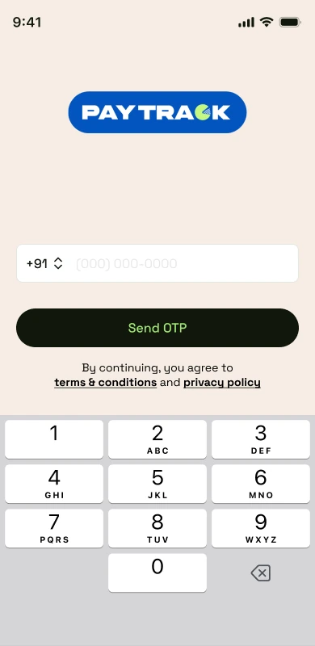
The code box is ready to type in right away, with a visible countdown.
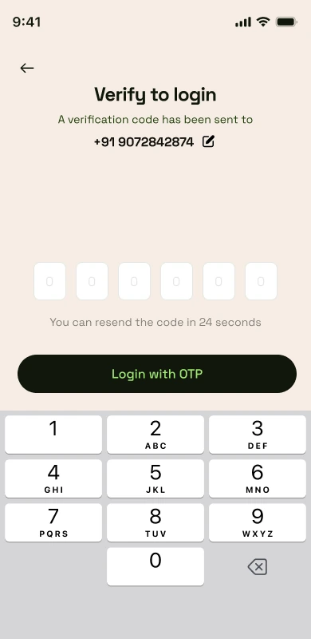
Resend unlocks the moment the cooldown ends.
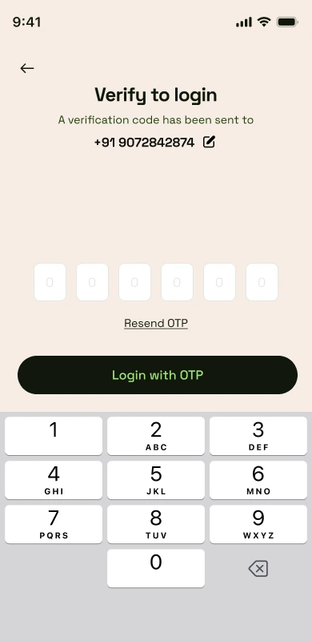
The pitch in one line: spends, decoded.
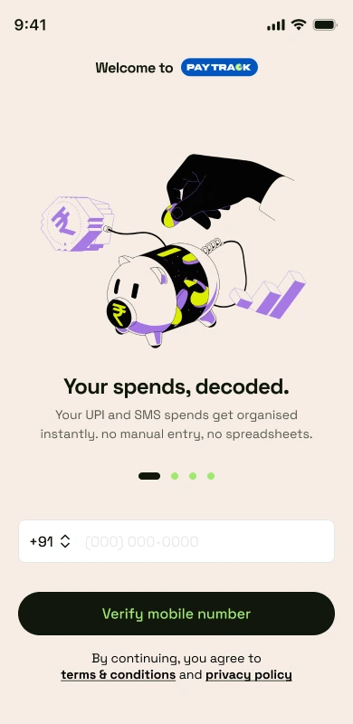
A 50%-off offer that focuses on what you'll get, not a list of features.
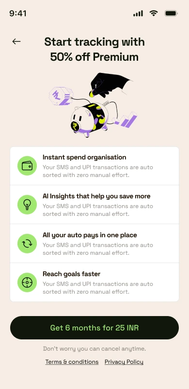
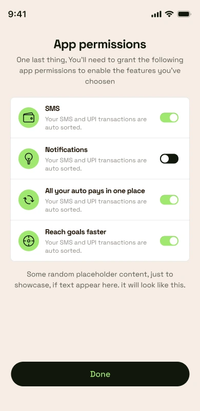
The one screen that has to earn a daily open
How much you've spent this month, what you're on track to spend, and where it's going - all visible the moment you open the app, no scrolling needed.
This month's spend and the projected spend sit together in one glanceable stat card.
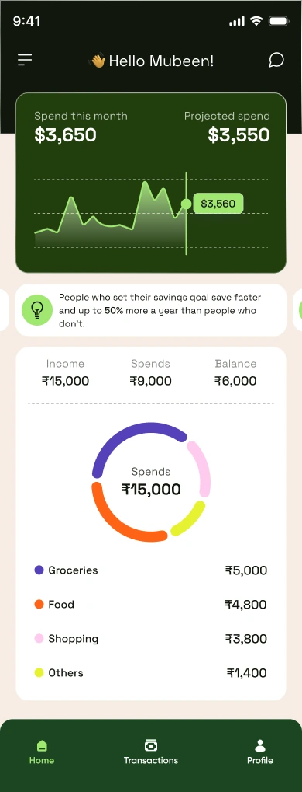
The category breakdown below reuses the same four colours used everywhere else in the app.
A ledger you can actually search
Every transaction grouped by day. Filtering by month, date range or category always opens the same kind of pop-up sheet, so it never feels unfamiliar.
A list of every transaction, grouped by day, newest first.
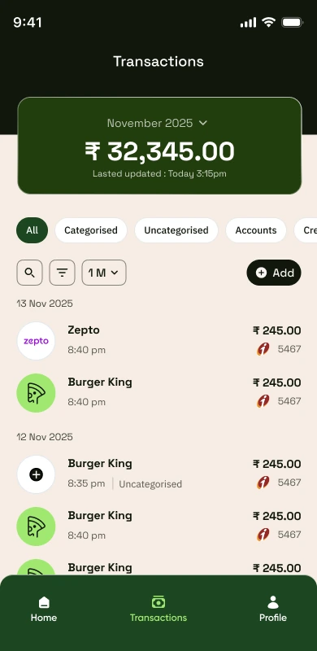
Jump to any month without leaving the list.
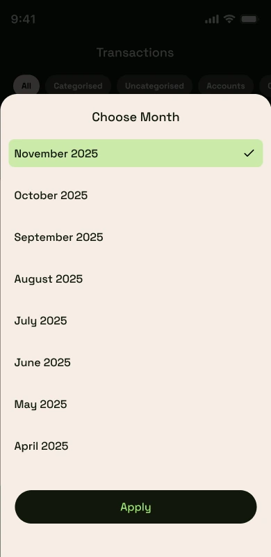
Today, last week, last year - all picked the same simple way.
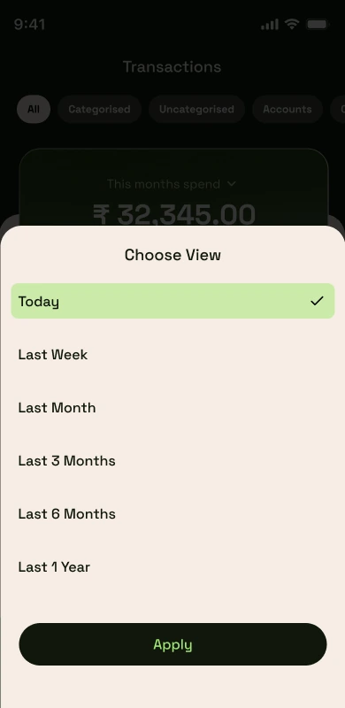
Twelve categories, each with its own icon and colour.
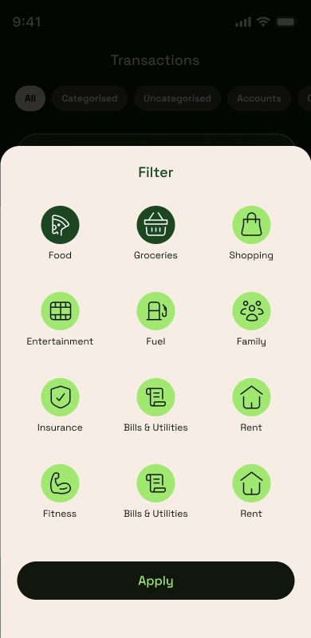
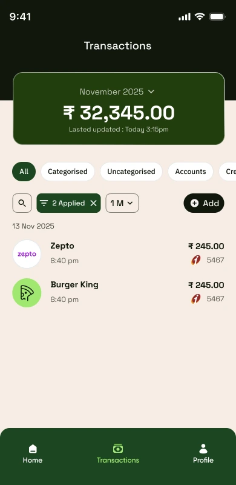
This shows 12 of the 40+ screens designed. The categories, transaction details, add-expense and profile screens all follow the same style rules shown here.
Outcome
Twelve screens' worth of rules held for 40+
The restrained palette made numbers-heavy screens easier to scan. The patterns written down after the first twelve screens scaled cleanly across the rest of the 40+, without breaking down. And one mascot, used sparingly during onboarding, was enough to make the app feel human before getting out of the way once real numbers took over.
Next project
Maritime SaaS · B2B